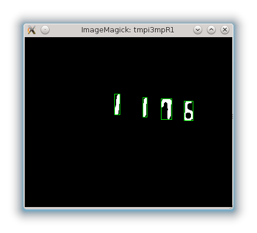

Image preprocessing
1. Thresholding
The thresholding we are using is based on the fact that the pixels corresponding to the numerals have a distinctive color that differentiates them from the background. Therefore we are using a simple predetermined threshold in the color space. We choose the following threshold values (in HSV color space):
H ∈ (150, 185)
S ∈ (0, 50)
V ∈ (0, 65)
Pixels inside the intervals are considered to be foreground, other pixels are background. In this way we obtain a binary image where the black pixels form the numerals and the white pixels are the background.
The HSV color space better reflect the human conception of color similarity than the more common RGB color space. The conversion between RGB and HSV is very simple. We visually evaluated the thresholding quality. It turned out that the selected threshold works well.
2. Segmentation
The pixels that form individual numerals are adjacent to each other, while between the numerals there are spaces. Therefore, to extract individual numerals, the thresholded image can be segmented according to connected components. To eliminate the effects of noise we ignored segments smaller than 6x6 pixels, should any such small areas appear. Each segment obtained this way is assumed to contain a single numeral.

3. Feature construction
We used primarily two features described in the Interim report:
- left, right, top and bottom profile of a segment (this attribute suitable to use for digit recognition according to literature [2])
- vector of all pixel values in a segment.
To make these features comparable, we first rescaled every segment to dimensions 20x40 and only then computed them.
Besides those, we later added these additional two features:
- the ratio of the width and height of a segment, which allows the classification algorithm to better distinguish the numeral 1 from numeral 8.
- the fraction of black pixels in the segment as a percentage, it aims to help distinguish numerals 0 and 8.
Novinky:
[20/05/2013]
Spuštìny webové stránky
[26/05/2013]
Interim report
Související odkazy:
WekaStránky předmětu